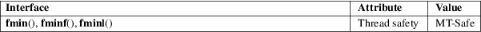

fmin, fminf, fminl − determine minimum of two floating-point numbers
Math library (libm, −lm)
#include <math.h>
double
fmin(double x, double y);
float fminf(float x, float y);
long double fminl(long double x, long
double y);
Feature Test Macro Requirements for glibc (see feature_test_macros(7)):
fmin(),
fminf(), fminl():
_ISOC99_SOURCE || _POSIX_C_SOURCE >= 200112L
These functions return the lesser value of x and y.
These functions return the minimum of x and y.
If one argument is a NaN, the other argument is returned.
If both arguments are NaN, a NaN is returned.
No errors occur.
For an explanation of the terms used in this section, see attributes(7).

C11, POSIX.1-2008.
glibc 2.1. C99, POSIX.1-2001.
fdim(3), fmax(3)